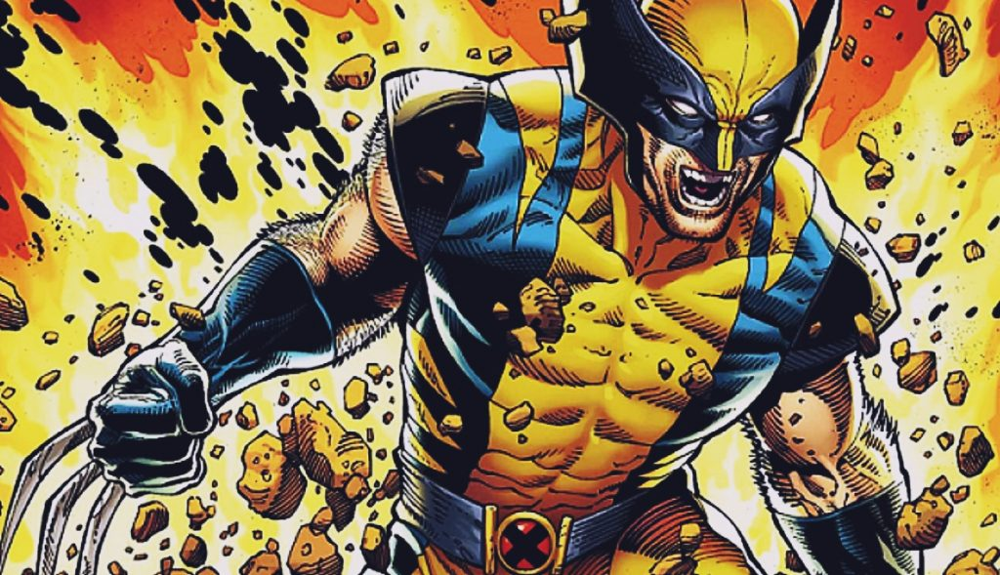

Wolverine to jeden z najbardziej znanych mutantów z uniwersum X-Men. Charakteryzuje się niezwykłą zdolnością regeneracji, wyostrzonymi zmysłami i szkieletem pokrytym adamantium. Jego przeszłość jest mroczna i pełna tajemnic. Wolverine jest samotnikiem, często targany wewnętrznymi konfliktami. Choć jest brutalnym wojownikiem, głęboko w sercu pragnie spokoju. Jego postać jest złożona i wielowymiarowa, co czyni go jednym z najbardziej interesujących bohaterów komiksów.
Zalety:
- Niezwykła regeneracja: Dzięki niej Wolverine jest praktycznie nieśmiertelny, co czyni go niezwykle wytrzymałym w walce.
- Wyostrzone zmysły: Jego zmysły są kilkukrotnie wyostrzone w porównaniu do człowieka, co pozwala mu na szybkie reagowanie i przewidywanie ruchów przeciwników.
- Szkielet z adamantium: Nadaje mu niezwykłą wytrzymałość i odporność na obrażenia.
- Doświadczenie bojowe: Przez lata walk i misji Wolverine zdobył ogromne doświadczenie, które czyni go doskonałym żołnierzem.
- Silne poczucie obowiązku: Choć jest samotnikiem, Wolverine zawsze jest gotowy pomóc innym, zwłaszcza tym, którzy są słabsi.
Wady:
- Złość i agresja: Często jego emocje biorą górę, co prowadzi do impulsywnych zachowań i nadmiernej brutalności.
- Amnezja: Częste utraty pamięci utrudniają mu budowanie trwałych relacji i zrozumienie samego siebie.
- Samotność: Wolverine woli działać w pojedynkę, co często prowadzi do izolacji i problemów z zaufaniem.
- Mroczna przeszłość: Jego przeszłość jest pełna bólu i cierpienia, co rzutuje na jego obecne życie i relacje z innymi.
- Moralna dwuznaczność: Choć walczy po stronie dobra, Wolverine nie zawsze stosuje się do zasad, co prowadzi do konfliktów z innymi członkami X-Men.